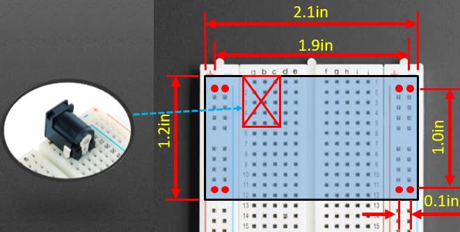

The second project is to build a motor controller with the following characteristics:
Due date (for PCB submission): Tuesday, February 19, 12:00 PM (noon (start of class))
When your design is ready, you should submit it to the fabricator, OSH Park. It will cost you around $10. After you submit it, forward your order confirmation to brandon.stafford@tufts.edu. That will serve as proof that you submitted your project on time.
(I'll add more details here if they're needed.)
The first project, as described in some detail in the first class, is to build a power supply with the following characteristics:
Due date (for PCB submission): Thursday, January 31, 12:00 PM (noon (start of class))
When your design is ready, you should submit it to the fabricator, OSH Park. It will cost you around $10. After you submit it, forward your order confirmation to brandon.stafford@tufts.edu. That will serve as proof that you submitted your project on time.
First of all, we're not trying to build anything revolutionary in this project. None of you have ever made a PCB before, so the point is to make something fairly simple to get comfortable with the process. (If you search Amazon for "breadboard power supply", you'll see that you can buy various versions of things like this, though none with the 12 V passthrough, so far as I'm aware.)
The image below shows the rough mechanical constraints for the PCB. You can make a board of whatever dimensions you want, but it needs to plug into the breadboard, hence the pin location dimensions.

In the first class, I'll hand out all the components you'll need to build a prototype of your power supply on a breadboard. You build the prototype and make sure that you've got the wiring right. Then, make the PCB with the same connections. Finally, when your PCB arrives in the mail, you can reuse the prototype components on your PCB.
To improve heat dissipation, you will want to use your PCB as a heatsink for the regulators. The TA from 2018, Dominic Guri, has made a KiCAD PCB footprint for the TO-220 package to help with that. You should put it into a folder called `volt-reg.pretty`, or something like that. (The ending `.pretty` is what matters to KiCAD.)
Put that folder in C:\Program Files\KiCad\share\kicad\modules on Windows or /Library/Application Support/kicad/modules on MacOS. Then, you can add that library to Kicad using Preferences > Footprint Libraries in the footprint association window.
Note that the pins on the two regulators are not in the same order!